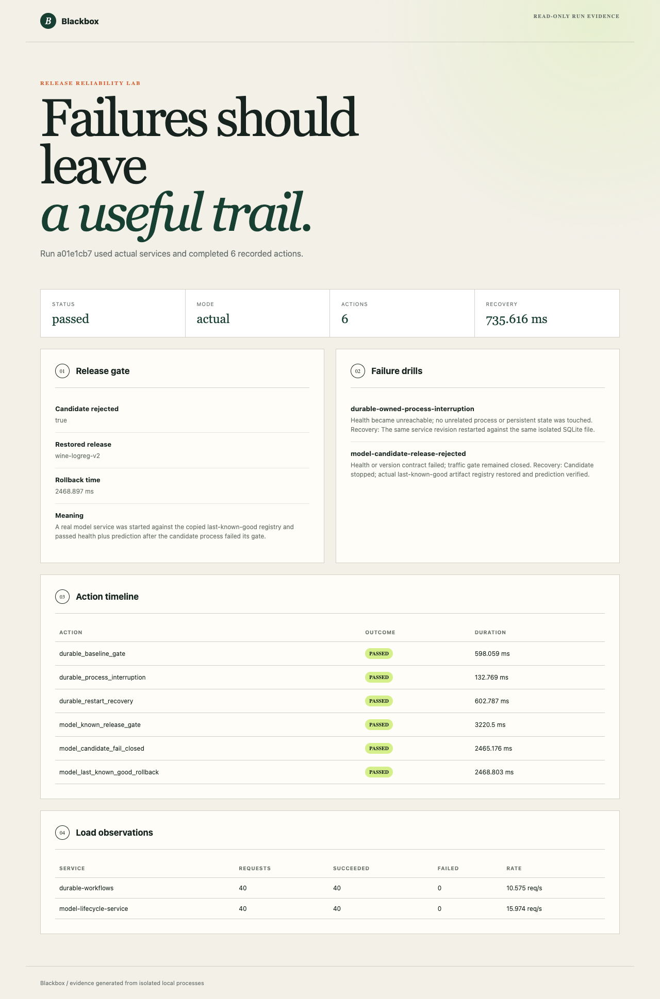

Failures should leave a useful trail.
Run repeatable release gates and isolated failure experiments against actual services, then inspect recovery and rollback evidence.
Static evidence walkthrough. This is a published record of local measured runs, not a live backend. The complete runnable service is in the repository.
What was verified
- 20 tests pass, including natural unreaped parent exit, child cleanup and unrelated-process isolation
- Actual SIGKILL made health unreachable; a persisted request completed after restart
- Bad candidate returned 503; known wine-logreg-v2 artifact restored and prediction verified
- 40 requests per service at 8 client threads all passed strict contracts
- Linux read-only report container serves actual evidence and has no fault-control HTTP endpoint

Run the project
git clone https://github.com/RoshanDewmina/release-reliability-lab cd release-reliability-lab uv sync --frozen make test # Clone durable-workflows and model-lifecycle-service alongside; sync both make demo make report
Limits that matter
- Local process/artifact rollback, not production traffic switching or database migration rollback
- Small host-dependent timings, not capacity or an SLO
- Independent review escalated an unreaped-parent edge case; root fixed it and verified the original failure plus full integrated acceptance
- Static public evidence; fault injection stays in owned local disposable processes
Independent review: Fresh independent Astra review and bounded re-review; remaining lifecycle edge case resolved by root diagnosis and integrated verification. Source at page generation: d60de3aa129ccb4756541ee2bdd037058f604c19. Software verification does not prove personal mastery; interview understanding and resume wording remain pending user review.
External spending for this portfolio remains $0. Local hardware/electricity cost unmeasured. Synthetic workloads do not establish production capacity.